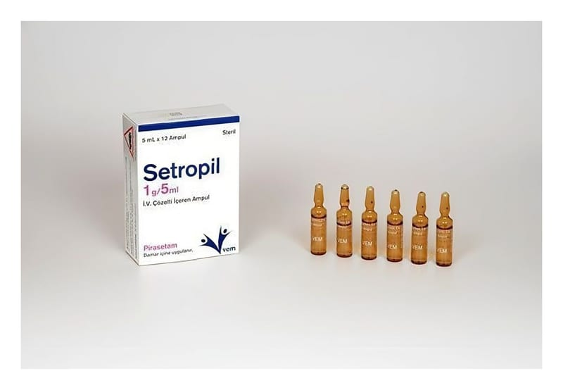

Setropil 1 g/ 5 ml İ.V. Çözelti İçeren Ampul, 12 Adet

Ne için kullanılır
KT · Bölüm 1SETROPİL, berrak ve renksiz bir çözeltidir. Her kutuda 12 ampul bulunur. SETROPİL, nootropik ilaç grubundadır. Nootropikler, öğrenme, hafıza, dikkat ve farkındalık gibi bilişsel süreçleri, yatıştırıcı veya uyarıcı etki ile bağlantılı olmaksızın geliştirir. SETROPİL; Erişkinlerde • Hafıza kaybı, dikkat eksikliği ve araç kullanma yeteneğinin kaybı gibi bulgularla seyreden psiko-organik sendromların belirtiye yönelik (semptomatik) tedavisi,
• Kortikal kaynaklı miyoklonus (bir veya daha fazla uzuvda veya gövdede kısa, ani (“flaş- benzeri”) kas kasılmaları) tedavisi (tek başına veya diğer ilaçlarla birlikte), • Baş dönmesi ve ilişkili denge bozuklukları (vazomotor veya psişik kökenli sersemlik hissi hariç) için kullanılır.
Çocuklarda • 8 yaş ve üzeri çocuklarda konuşma terapisi gibi uygun yaklaşımlar ile birlikte disleksi (okuma/yazma güçlüğü) tedavisinde kullanılır.